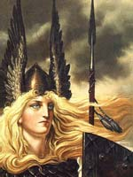

Валькірії ( "вибирають убитих"), у скандинавській міфології войовничі діви, які беруть участь в розподілі перемог і смертей в битвах, помічниці Одіна. Спочатку валькірії були зловісними духами битв, ангелами смерті, які отримували задоволення від виду кривавих ран. У кінному строю проносилися вони над полем бою, немов стерв'ятники, і ім'ям Одіна вершили долі воїнів. Обраних героїв валькірії несли в Вальхаллу - "чертог вбитих", небесний табір дружинників Одіна, де ті вдосконалювали свою військову мистецтво. У пізніх скандинавських міфах образи валькірій романтизувати, і вони перетворилися в дев-щітоносіц Одіна, незайманих з золотим волоссям і білою шкірою, які подавали обраним героям їжу і напої в бенкетному залі Вальхалли. Вони кружляли над полем битви у вигляді чарівних дів-лебедів або вершниця, скачуть на чудових перлинних конях-хмарах, чиї дощові гриви зрошували землю родючим інеєм і росою.
Згідно англо-саксонським легендам, деякі з валькірій походять від ельфів, але більшість з них були дочками знатних князів, які стали валькірії-избранницами богів ще за життя, і могли перетворюватися в лебедів.
Сучасній людині валькірії стали відомі завдяки великому пам'ятника древньої літератури, що залишився в історії під ім'ям "Старша Едда". Тут діви-войовниці мали імена, відповідні їх сутності - Гёндуль, Гун, Рота, Скёгуль, Сігрдріва, Сігрун, Свава, Скульд і інші. Багато з них, найбільш древні, не піддаються перекладу.
Серед пізніх найбільш відомі Хлекк ("Шум битви"), Праця ("Сила"), Кріст ("Приголомшлива"), Міст ("Туманна"), Хільд ("Битва"). Образи ісландських міфічних дев-войовниць послужили основою для створення популярного німецького епосу "Пісня про Нібелунгів". В одній з частин поеми розповідається про покарання, яке отримала Валькірія Сігрдріва, яка насмілилася виявити непослух Богу Одину.